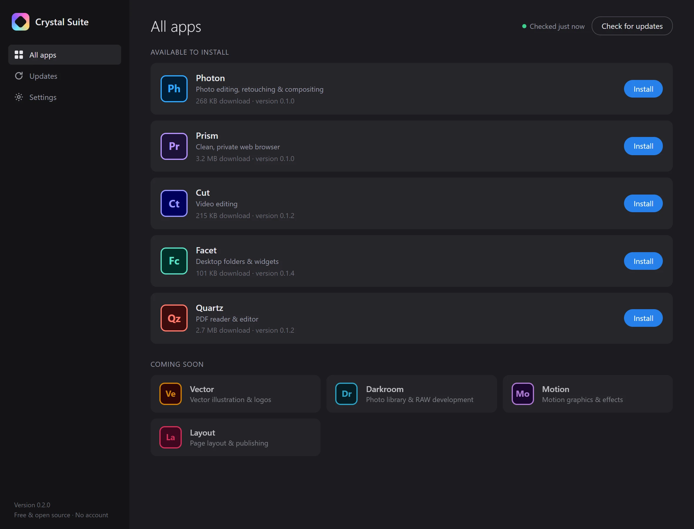

Download Crystal Suite
For Windows 10 and 11 (64-bit). Install the launcher, then pick the apps you want. Each is a small download.
Installer
Installs Crystal Suite for your account, with Start menu and desktop shortcuts. No admin rights needed.
Download installerCrystalSuite-Setup-0.2.0.exe · 71 MBPortable
One file you can run from anywhere, such as a USB stick. Apps still install to your user folder.
Download portableCrystalSuite-Portable-0.2.0.exe · 71 MBThree steps
- Run the installer
The builds aren’t code-signed yet, so Windows SmartScreen may say “Windows protected your PC”. Click More info, then Run anyway.
- Install the apps you want
Crystal Suite opens on All apps. Click Install next to an app: it downloads, checks itself and gets its own shortcut.
- Updates take care of themselves
New versions install in the background. An app that’s open switches over the next time you start it.

Prism is also available on its own: Prism-Setup-0.1.0.exe or the portable version, no launcher needed.
Use ⋯ › Uninstall in the launcher to remove an app. Uninstalling Crystal Suite from Windows Settings removes its apps too.
Older versions, release notes and the app packages are on the GitHub releases page.
Build it yourself
You need Node.js 18 or newer.
# get the code git clone https://github.com/Enqrypted/crystal-suite.git cd crystal-suite npm install # run the launcher, or one app on its own npm run app npm run quartz